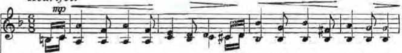
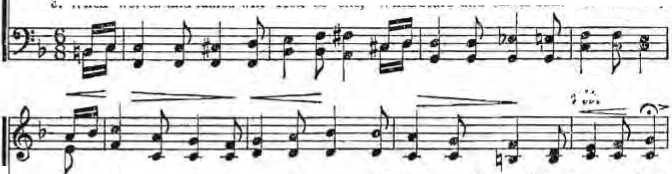

Why So Many Parental Heartbreaks?
The Catholic Church in Crisis
PAGE a
Fluoridation—Is It Good or Bad?
PAGE 16
Where the Wind Holds Sway
PAGE 2«4-
THE REASON FOR THIS MAGAZINE
News sources that are able to keep you awake to the vital issues of our times must be unfettered by censorship and selfish interests. "Awake!" has no fetters. It recognizes facts, faces facts, is free to publish facts. It is not bound by political ties; it is unhampered by traditional creeds. This magazine keeps itself free, that it may speak freely to you. But it does not abuse its freedom. It maintains integrity to truth.
The viewpoint of "Awake!" is not narrow, but is international. "Awake!" has its own correspondents in scores of nations. Its articles are read in many lands, in many languages, by millions of persons.
In every issue "Awake!” presents vital topics on which you should be informed. It features penetrating articles on social conditions and offers sound counsel for meeting the problems of everyday life. Current news from every continent passes in quick review. Attention is focused on activities in the fields of government and commerce about which you should know. Straightforward discussions of religious issues alert you to matters of vital concern. Customs and people in many lands, the marvels of creation, practical sciences and points of human interest are all embraced in its coverage. “Awake!" provides wholesome, instructive reading for every member of the family.
"Awake!" pledges itself to righteous principles, to exposing hidden foes and subtle dangers, to championing freedom for all, to comforting mourners and strengthening those disheartened by the failures of a delinquent world, reflecting sure hope for the establishment of God's righteous new order in this generation.
Get acquainted with "Awake!" Keep awake by reading "Awake!"
Published Semimonthly by
WATCHTOWER BIBLE AND TRACT SOCIETY OF NEW YORK, INC. 117 Adams Street Brooklyn. N.Y. 11201, U.S.A.
N, H. Knosb. President Grant Suiter, Secretary
Average printing each issue: 4,550,000 Five eenti « copy
Yearly subscription rata*
Offleoi for semimonthly editions
Amtrlea, U.S., 117 Adams Brooklyn, N Y. 11201 <1 Australia, 11 Beresford Rd.. > n•■.field. NSW
Canada, 150 BtMgeland Ate. Toronto 19. Ont
England, Watch Tower Bouse,
Hew Zealand, 621 New North lid.. Auckland S.W 3
South Africa, Private Bag 2, P.O tl-...1 fonuin. Tri. 70c
(Monthly editions cost half (he above rates.) Remittances for aubacrtplicus should be sent tn the office tn your country Otherwise send youi remittance to Brooklyn. Notice of expiration Is sent at leayt iwu b»ucs before •eihKriptlon expires.
Now published in 26 languages
Semimonthly—Afrikaans, Cebuano, Danish, Dutch. English. Finnish, French. German. Greek, Iloko, Italluu. Japanese, Korean. Norwegian, Portuguese, Spuflhb, Swedish, Tep»lng. Zulu
Monthly—Chkirtc. Cluyanla, Hlllgaynon, Malayalam. Polish, Tanii), Ukrainian
|
CHANGES OF ADDRESS ihould r*ach ui thirty |
di>» | |
|
before your moving date. Give |
ui your old and |
new |
|
audrejs (If possible, your old |
address label). |
Write |
|
Watchtower. 117 Adams Street. 11201. U.S.A. |
Brooklyn, New |
York |
•kwud-i’ltteh povliur paid :*l Brooklyn, N Y. Printed in U.S.A.
Thf Blbl. translation regularly used in "Awake."' it the New World Translation of the Holy Scriptures, 1961 edition. When other translations an used, this is clearly marked.
CONTENTS
Why So Many Parental Heartbreaks? 3
A Delicious Treat from the Tropics 15
Fluoridation—Is It Good or Bad?
Heard at the Bethel Dinner Table 20 The New World Translation in India Where the Wind Holds Sway Capitalizing on a Quechua Princess "Your Word Is Truth"
By Whose Authority ‘First Called Christians’?
Watching the World
23
24
26
27
29
Volume XLVIII Brooklyn, N.Y., July 22, 1967 Number 14
Why do so many youths today puzzle parents and police officials? What can parents do about it?
Recently in a leading American woman’s magazine a mother told of her heartbreak. She and her husband were wellto-do, in their forties, and had three charming teen-age daughters. They had given these, as she tells it, “stable, secure homes, religious training, a clear-cut moral standard.” More than that, they had the courage to say "No” to their children when this seemed right, and even had been careful as to the kind of TV programs and motion pictures they permitted their daughters to view. They were also well acquainted with their daughters’ friends.
Then one day, in the middle of the forenoon, her husband came from work to hand her, ashen-faced and trembling, a letter to read. She wrote that as she started to read the letter it seemed as if a sewei' pipe had exploded in her face. Halfway through she felt she could not continue, but hei’ husband insisted that she finish reading it. What was it all about?
It was a letter, "pornographic in language, cynical in its philosophy. ... Its chief characteristic was total depravity . . . Nihilism [which denies that there are any such things as truth and goodness] breathed from every word.” It was a letter in which the writer was bent on the pursuit of pleasure and calmly viewed suicide as the way out if things got too complicated. The letter had been written by, of all persons, one of her daughters to a friend on vacation. The father chanced to come upon it and, being suspicious in view of recent events, had opened and read it, to his great dismay. They experienced an even greater horror, the mother said, when they confronted their daughter with the letter, for she felt no shame or remorse.
They had seen the heartbreak of a number of their friends because of the lawless conduct of their children, and now these parents joined their ranks. Taking stock, they found that their other two daughters were being tainted by the same moral poison. Although, as far back as could be remembered, the families of these parents had never been involved with the police, "yet in the past six months we have had official dealings with police, probation officers and school officials in dizzying succession," the mother said.
She complains: "The authorities . . . are as baffled and frustrated as we are by the growing phenomenon of problem children coming out of good homes. ... If training, discipline and living a code of elhics and a stable, secure existence cannot insulate them from these evils, what can? . .. We have spent many an agonized hour reviewing our lives to see what spawned our heartbreak. We have not found the answer in our home life. Why did they learn to lie with smiling ease? How did they acquire expertise [skill 1 in deceit and deviousness? How, we wondered, in such a daze, had we come to find ourselves adrift in this crazy, juvenile hell of grinning faces, dirty feet, empty brandy bottles, dingy rooms? ... I cannot reconcile myself to what has happened to our child." She further asks, Why did the beliefs and principles that supported us parents fail to support the morality of our children?’
The Part Environment Plans
Undoubtedly world conditions are a major contributing factor to such parental heartbreak. Peruse the morning paper, and how often one finds, not only crime and war, but, day after day, one exposure after another of corruption in business and politics. There is an "increasing of lawlessness," even as Jesus Christ foretold and as this mother grants when she says: "The things we don't want to come in nevertheless do come in, via TV, telephone, magazines, newspapers, and by plain word of mouth.” And helping to make matters worse is the blase attitude of some parents, such as the neighbor who told this heartbroken mother: “Kids have no morals these days—I don’t know what we can do about it."—Matt. 24:12.
No mistaking about it, we are living in the times that the apostle Paul foretold: "In the last days critical times hard to deal with will be here. For men will be . . . without self-control, fierce, without love of goodness, . . . lovers of pleasures rather than lovers of God.” It may be that these heartbroken parents made the mistake of equating conditions that prevailed in their childhood with those that prevail today.—2 Tim. 3:1-5.
It is as though they had learned to navigate on the sea of life in peaceful, calm and sunny weather and thought that teaching their children to navigate under similar conditions was all that was needed. But the parents may have overlooked entirely the fact that the moral weather of the world today is like a storm, like a hurricane. What a vast difference there is in the moral tone of the modem novel and of today’s TV and motion-picture programs as compared with those of twenty-five and more years ago! When it comes to inculcating principles of righteousness, these are not limes for ‘business as usual'! A failure to recognize this fact without a doubt is one of the basic reasons why there are today so many heartbroken parents who truly meant well. They did not take seriously enough the danger of then-children’s being infected by what this mother calls “the deadliest disease of all —moral dry rot."
Aesthetics or Ethics?
Another reason for much of the parental heartbreak no doubt is a failure to distinguish between aesthetics and ethics. Aesthetics—culture, love of beauty, fine manners, appreciation of art—are one thing, but ethics—moral principles, love of righteousness and truth—are something entirely different. Thus this mother states in her defense that "all during the time our daughters were growing up we sought to exclude not only the harmful but the trite influences,” that is. the commonplace in literature and entertainment, "so that they would reject of their own accord the mediocre and tasteless." She also complains about the glorification of "the banal and the mediocre."
But culture in itself is not the antidote to the degrading tendencies of our times. More than one noted figure in such fine arts as literature and music had very questionable morals. Ancient Greece was very cultured; Corinth was its wealthiest city and excelled all others in such arts as painting, sculpture and poetry. But it also became notorious as the most licentious city of all Greece, whose patron goddess was Aphrodite, the goddess of love or sexual passion, and in whose temple there were more than a thousand female slaves (hierodouli) for the use of strangers.
So mere emphasis on aesthetics is not the answer to the question as to how to protect modem youth from modern evils. Youth turns to the commonplace and mediocre, not because of a lack of education in aesthetics, but because of its quest for thrills, for sensual pleasure, for excitement, for things that appeal to the lower instincts in fallen man. Depravity, for that matter, has its refinements just as virtue has, as can be seen by the works of such men as Marquis de Sade, whose depraved writings are considered art by some, one of them even becoming a modern "hit."
Keen Moral Consciousness
What is needed to counteract the morally degenerate environment of our times is a keen moral consciousness, a strong awareness of the difference between right and wrong, a devotion to the principles of righteousness. The Bible inculcates this by telling, not only that "God is love," but also that He is a God of justice and power and, in fact, a "consuming fire" to wrongdoers. The wholesome fear to displease him is "the start of wisdom,” and it helps one to hate what is bad. Parents must have this strong love of what is right and hatred for what is bad and inculcate these in their children if they would protect them from the "moral dry rot” and not become heartbroken parents themselves. And. in particular, must the father do this, as he is best fitted for such instruction. But today, all too often, fathers have abdicated their proper position as head and disciplinarian of the family. —1 John 4:8; Heb. 12:29; Prov. 9:10; 8:13.
True, the heartbroken mother in question describes her family as "church-going, middle-class people.” "Churchgoing," yes, but what does that mean? What kind of spiritual food do many clergymen dispense from the pulpit? Often it includes Darwin’s theories, who himself became an out-and-out agnostic, wholly without faith, and those of Freud, who called religion "the grand illusion." Such theories tend to weaken the moral sense that distinguishes man from the lower animals. No wonder that Dr. James W. Clark, Princeton Seminary professor, once complained that one of the prime needs of modern churches is "the capacity for moral wrath.” According to him, many clergymen “can stand and gaze upon moral evil without their pulse increasing a single beat or without any rising anger.” Far from being moved by evil, many clergymen today actually justify fornication and homosexuality.
And to what extent is there regular Bible instruction in the home and a daily inculcation of Bible principles? To mention but a few of these principles: "Just as you want men to do to you, do the same way to them.” ‘‘The wages sin pays is death.” Do not be misled: God is not one to be mocked. For whatever a man is sowing, this he will also reap.” Wise parents will heed the instructions that Moses gave to fathers: ‘‘These words that I am commanding you today must prove to be on your heart; and you must inculcate them in your son and speak of them when you sit in your house and when you walk on the road and when you lie down and when you get up.” Those who do this are far less likely to suffer parental heartbreak.—Luke 6:31; Rom. 6:23; Gal. 6:7; Deut. 6:6, 7.
Other Influencing Factors
Among other factors that must be taken into consideration if parents would avoid the heartbreak caused by their children’s not turning out well is that of training their children from earliest infancy. From the day of birth onward, certain truths must be impressed ever more clearly on the child's unconscious and then on the conscious mind, even as child psychologists have recently discovered. One of these truths is that it is truly loved by its parents and another is that it can always depend upon its parents. Important also is the fact that the child learns early that certain things are right and permitted and certain things are wrong and forbidden. As God's Word says: “Train up a boy according to the way for him; even when he grows old he will not turn aside from it.”—Prov. 22:6.
In particular the importance of love, not sentimentality, cannot be overstated. Love is firm when it needs to be. Where there is a strong love for the child, there will be a genuine concern for the child's welfare and an awareness when something is not right. Love has eyes! Such a parent will not hesitate to sacrifice pleasures for the sake of the child’s well-being. As a result the likelihood will be strong that communication will always remain open between parent and child and so the parent naturally becomes the confidant to the child. Yes, parents must give of their own souls to their children, as the apostle Paul said he did to his Christian “children.” —1 Thess. 2:7-11.
ARTICLES IN THE NEXT ISSUE
• The Problem of Conscience.
o Church Programs Get Updated.
• Wild Foods for Your Table.
• Meet Us in Bomb.-.y.
This brings up the question of the wisdom of a mother’s having a career aside from that of caring for her husband and children. A career in the Christian ministry is one thing, but a secular career is something else. It may be exciting, stimulating and rewarding, but also exhausting and tiring. It may well be asked how much time and energy a mother has for her children if she is pursuing a secular career. Can a mother do justice to both? The aforementioned heartbroken mother happened to be a career woman.
Among the greatest helps of all is the teaching of Bible truths. Here is where the Christian parent has an advantage over others. From the Bible one can learn about original sin, why God has permitted wickedness and that in His due time he will bring an end to it. Then the child will not be in trouble when he sees, “not once, but many times the rules he is taught to live by broken, and broken without punishment,” as that heartbroken mother complained.
That children can be protected against the evil environment of our times and parents kept from becoming heartbroken is being demonstrated by the children of Jehovah's witnesses throughout the world. Thus a police captain in Brooklyn told a Witness overseer of a congregation that he was glad that the Witnesses did not expect the police to keep their children in line as did other religions. And at the latest convention of Jehovah’s witnesses at Yankee Stadium a Jewish newspaper reporter exclaimed: “It is amazing what, you are able to do with your children! You have them all here with you at. this religious convention and they all seem to enjoy it!”
Yes, in his inspired Word the Creator provided the means for properly training children. Parents who follow its wise counsel will keep barriers from forming between themselves and their children and greatly lessen the likelihood of suffering heartbreak.
ANY are the plant-eating creatures we see around us on earth, but did you know that there are also a number of tlesh-eating plants to add variety to the earthly scene? There is no doubt that there are such deadly plants lurking by the wayside and watching for victims. But do not worry, humans are a bit too large to be endangered by the plant predators.
Imagine, if you will, a round-faced green leaf, hinged along its diameter, and spiked around its circumference in such a way that as soon as a very delicate spring is tripped the two halves close almost imperceptibly, and the spikes mesh so that anything caught within is helplessly trapped. That describes what is known in the plant world as a Venus flytrap. Another engaging feature of this plant trap is that its surface is coated with a sticky substance that temporarily bogs down the insect visitor until such time as the trap is securely closed. Then the plant’s digestive juices go to work, disposing of the victim. Later the “bones'’ or indigestible parts are ejected.
Then there is the pitcher-type plant. This has the same effect as a pitcher the inside surface of which is sticky with sweet syrup. Once a small insect gets inside, it is almost impossible to get out. But even more ingenious is the plant’s snare, for all around its inside edge are spiky hairs pointing downward, so that the struggling victim cannot make any headway upward. When his struggles have ceased he slides to the bottom of the pitcher and is there gradually digested by the plant.

Still more amazing is the welcome prepared by the sundew plant for any marauding insect, even a grasshopper or a butterfly. First, the large flat leaf sets the bait in the form of tiny drops of a moist, shiny substance. When the insect lands to investigate, little tentacles on the leaf’s surface grab it and proceed to digest the creature.
Then there are the water plants that enjoy a tasty meat dish. The bladderwort is one of these. It has many small balloonlike bladders that float around waiting for tiny aquatic creatures to venture too close. When they do, the bladderwort has a little trap door on each bladder that will suddenly open inward, and the victim gets caught in the rush of water into the bladder. The victim cannot escape, for the trap door will not open outward.
You have probably also heard of those little creatures like lizards and frogs that can use their tongues lasso fashion to collect their food. Well, there are tiny fungus plants that follow the same practice. They shoot out thin feelers that form into loops, and, when some delectable morsel such as a worm blunders into the loop, it quickly tightens and, presto! the larder is restocked.
But in case you get the idea of growing some of these plants in your home, stop and think about what is involved first. If your home is equipped with screens to keep out insects, where will your plants find their food? Are you going to be their personal provider? Most people find that they have problems enough bringing home meat for the family, without adding plants to the list of those to be fed.
661 J1 ROM Boston to Bombay, the Catho-
I lie world has entered upon a time of tension without parallel since the age of Luther,” stated Newsweek of March 6, 1967. Similarly, a religious editor observed: “The Roman Catholic ferment is more profound and more far-reaching than that of any other denomination.”
A theologian of Vatican Council II confirmed this by confessing to his students: “I have long resisted use of the word ‘crisis’ to describe this age of our church. I resist no longer. I know no other name for our present state.” And a church historian, Monsignor J. T. Ellis, noted concerning Catholicism: “This is not a time of change, but a time of revolution.”
In all areas, whether doctrinal or organizational, the Roman Catholic Church is being shaken by disputes. These are so serious that this period has been likened to the time just before the French Revolution of 1789 overthrew the established order.
Church teachings such as papal infallibility, celibacy, birth control, meatless Fridays and abortion, and organizational matters such as the church’s authoritarian structure, freedom of speech and conscience, as well as many others, are being openly challenged by both Catholic clergy and laity.
The situation in the United States was described by the publisher of the National Catholic Reporter as an "age of unbelief that has finally begun to hit the church in America.” In Britain, the crisis is so intense that the New York Times of March 13, 1967, stated: “Hardly a week has passed in recent months without some gesture of defiance of orthodoxy by progressive elements among the clergy and the educated laity of the nation’s five million Roman Catholics. Such words as ‘corrupt,’ ‘heresy,’ ‘anarchy’ and ‘lies’—epithets more suitable, perhaps, for the rough-and-tumble of political debate—are being exchanged among prelates and laymen in public assemblies and in the columns of religious and secular newspapers.”
Spectacular Defections
This ferment has led to increasing defections from the church of high-ranking officials as well as ordinary priests and nuns. Some defections have been of a spectacular nature.
In Newburyport, Massachusetts, the New York Times of May 9, 1967, reported, the following took place: "A young Roman Catholic priest stunned his parishioners yesterday by announcing from the pulpit that he was leaving the priesthood. The Rev. Walter Thomas Whalen, 30 years old, turned to face the 1,000 worshipers at the 9 a.m. mass at the Church of the Immaculate Conception. ‘I have a special announcement to make,’ he said. ‘After a very long period of consideration, I have decided to cease the active priestly ministry.’ " He then walked briskly from the church to the rectory, packed his bags and departed.
A far more profound impact was made earlier this year by the decision of Britain's leading and best-known Roman Catholic theologian, Charles Davis, to leave the priesthood and the church. He had taught for sixteen years and was serving as a professor of theology at Heythrop College, a seminary. Since 1960 he had edited the Catholic publication Clergy Review. He was also one of the “periti,” the experts who gave bishops advice during the Ecumenical Council.
Why did Davis come to his decision to leave the church? Among the reasons he gave were tlie following: “The more I have studied the Bible, the less likely the Roman claims have become. . . . there is simply no firm enough biblical basis on which to erect so massive a structure as the Roman Catholic claim requires. . . . I have suffered agonies as a theologian in the Roman Catholic Church. I find no attention to truth for its own sake. Reasons of expediency, above all, the preservation of authority, seem always to dominate. I look in vain at the official level for a joyful sense of the value and power of truth as truth.”
Davis also stated: “I should take more kindly to this constant anxiety over the institution, were it not true that the Church in recent history has again and again compromised its mission to save its institutional existence or privilege. The glaring instance is the Church in Nazi Germany, but this does not stand alone. When in fact has the Church ever entered into conflict with established authority to bear witness, even at the cost of its institutional position? The Church as an institution is turned in upon itself and more concerned with its own authority and prestige than with the Gospel message. I cannot accept its claim upon my faith.”
Commenting on dissension within the church, Davis said that the “Church is now internally torn by tension and incoherence, since its institutional faith is in truth incompatible with biblical criticism and modern theology.”—London Observer Review, January 1, 1967.
Further dissension quickly erupted within the ranks of the British clergy in regard to Davis' charges against the church. Writing in a Catholic publication, prominent Catholic priest Herbert McCabe stated of Davis’ charges: “These charges seem to me very well founded, and their truth would on the whole be taken for granted by English Catholics. The church is quite plainly corrupt.”
Steady Erosion
Not all defections were as spectacular. Nevertheless, as Time magazine of December 30, 1966, said: "Catholicism unquestionably is suffering a small but steady erosion of its clerical ranks.”
Part of the erosion can be seen in the sharply decreasing numbers of candidates for clerical orders. In North America, priest Robert McNally of Fordham University said that the ratio of religious vocations to the Catholic population, not only is failing to hold its own, “but is falling below normal and average.” He called the trend a "crisis” and added: “This decay is nationwide. Before the century is over the Catholic Church in North America will find herself in the same disastrous situation as her sister church in South America,” where a severe shortage of priests exists. McNally noted that the typical response to his suggestion that young men enter the priesthood is: ‘‘Sorry, father, that is not for me.”
One of the causes of the erosion of those already priests is that many of them leave the church to marry, and thus are excommunicated automatically. Others are leaving because they strongly object to the doctrine of celibacy, even though they have no immediate intention of marrying. Typical of such erosion was this item in the New York Times of February 20, 1967, concerning Catholic priest Malcolm Tudor: “The celibacy doctrine of the Roman Catholic church has caused another British priest to give up the clergy. . . . His action followed last week's announcement by the Rev. Arnold McMahon, another West Midlands priest, of an intention to marry.”
In the Netherlands, twice as many left the priesthood in 1966 as in 1965. At a clergy conference in that land a reporter was told: "We do not believe this increase is greater than other countries." Throughout the world it is estimated that there are some 60,000 persons who have left the priesthood.
Nor is the steady erosion limited to the priestly ranks. In an article entitled “The Nuns That Quit” the Ladies’ Home Journal of April 1967 said about the United States’ situation among nuns: “According to reliable estimates, at least 3,600 professed sisters left their convents for good. These were not uncertain novices or postulants, but mature women who had taken their vows and served the Church for years.” It added: “The alarming rise in the number of nuns leaving their orders is a little-known and poorly understood aspect of the revolution now sweeping world Catholicism ... A rebellion by these patient, dedicated, selfless women once seemed impossible. Yet that is precisely what is happening.”
Some church officials estimate that the number of nuns who resign in America has more than doubled in the past five year’s, and that new vocations are down as much as 50 percent. In the New York Archdiocese alone, twice as many left in 1966 as in 1965.
Dissension Gathers Force
Many contend that the crisis gathered force from the time Pope John XXIII summoned Catholic bishops to meet in Rome for the Second Vatican Council late in 1962. At the time, he expressed the purpose for the Council in these words: “We intend to let in a little fresh air." —Maclean’s, August 20, 1966.
Few would have imagined that from “a little fresh ah’" winds of dissension would grow swiftly to crisis proportions, of hurricane force. Indeed, what has happened since the beginning of the Ecumenical Council has been more like the opening of the mythological Pandora’s box. when “vices, sins, diseases, and troubles instantly flew out” and could not be put back.
Since the airing of doctrine and practice by the Council, dissension, debate and division are being felt with increased intensity throughout, the Catholic world. Aside from those who leave the church, many remaining within it are being tom by differences. For example, at Cambridge University recently, Archbishop Thomas Roberts was lecturing to students when a priest, Joseph Christie, the acting chaplain for Roman Catholic students, interrupted the talk to accuse Roberts of heresy for advocating freedom of choice in matters relating to intermarriage, contraception and abortion. A shouting match followed between the two, both Jesuits, and the meeting was promptly ended.
Disturbances that would have been considered unthinkable a few years ago are occurring at Catholic schools. In April of this year at Washington’s Catholic University of America the students and faculty, 7,200 in all, walked out in protest over the firing of a theology professor, priest C. E. Curran. Curran had been discussing his liberal views on various subjects, particularly on birth control. So he was dismissed by the school’s board of trustees, which is composed of all five United States cardinals, twenty-two archbishops, six other bishops and eleven laymen, and whose chairman is New York’s Francis Cardinal Spellman. The striking students, priests and nuns carried placards demanding Curran’s reinstatement.—Time, April 28, 1967.
Of the turmoil in Catholic colleges, U.S. Neivs & World Report of May 8,1967,said: "Suddenly, the churchmen who run the nation’s Roman Catholic colleges and universities are waking up to deep trouble on their doorsteps. Religious control of these institutions, once absolute, is under fire. Coming into the open is campus dissension over issues confronting the Church today—birth control, the nature of God, and even papal infallibility. In the process of change, one Catholic college has ‘gone secular’ completely, and other institutions are giving much power to laymen.”
Webster College had been a Catholic women’s school of about 1,000 students founded and run by the Sisters of Loretto. Its president was a nun. But this year’ the school became entirely secular, abandoning control by the church. Its nunpresident relinquished her vows as a nun and became the school's secular president. She stated: “It is my personal conviction that the very nature of higher education is opposed to juridical control by the Church."
Of the ferment in the schools U.S. News & World Report also said: “Roman Catholic colleges and universities are being confronted with major change. Even at Catholic University, the unrest of recent weeks is far from over. Faculty members are asking for a basic overhaul that would give more power in running the university to educators and less to the Church hierarchy."
Growing dissension has even resulted in Catholic churches' being picketed by parishioners. In May, sign-carrying Roman Catholic parishioners demonstrated in front of two Roman Catholic churches in San Antonio, Texas. They were demonstrating in support of four priests who had been suspended for criticizing the archbishop of San Antonio. Another priest who had been banished earlier stated that there “is a crisis in the Catholic Church, and events over the last three months prove the crisis has come to San Antonio.”
European Hierarchy Challenged
Especially throughout Europe is the rule of the Catholic Hierarchy being challenged. On this matter, columnist E. J. Hughes wrote in Newsweek of March 6, 1967:
“The conflict probably looms most clear and dramatic in Europe, as north is pitted against south. While 22 of the 29 cardinals in the Roman Curia continue to be Italian, the clergy and laity of Northern Europe pay them less and less respect. In France, the bishops recently retorted with defiance to Alfredo Cardinal Ottaviani’s alarm over ‘audacious opinions' plaguing the church: the bishops happily hailed the suspect views as 'adventurous.' In the Netherlands, a Catholic community now grown to 40 per cent of the population confidently wishes, as a leading Franciscan says, to 'show its own face’ in the Catholic world. ... At the same time, the Catholic views of church-and-state relations, in Northern Europe and in Southern Europe, seem to differ almost as profoundly today as when the Spanish Armada set sail.”
Nowhere is the division within the church more surprising to casual observers than in Spain. There the church is split between the younger, progressive, liberal priests on one side and the older, conservative hierarchy members who have controlled Spain’s religious affairs. A headline in the New York Times of November 7, 1966, declared: “PRIESTS IN SPAIN SCORE HIERARCHY.” The article said:
"The rebellion of the 'new church’ in Spain has reached a milestone with the delivery here of a resounding protest from the rebellious priests to the conservative Roman Catholic hierarchy.
“In a document charging the hierarchy with ‘complicity and a compromise with the established temporal order’—the regime of Generalissimo Francisco Franco—the rebellious prelates demanded that the Spanish church accept fully the precepts of the recent Vatican Ecumenical Council on political and religious liberty and social justice.
"The document . . . was described in Catholic circles as being without a precedent in the modern history of the Spanish church.”
To back up the document, the rebellious priests gathered the signatures of 450 priests throughout Spain.
A month later the Times of December 5 carried this headline: “CRISIS CONFRONTS SPAIN’S CATHOLICS.” A subheading noted: “Unrest in Church Grows in Wake of Vatican Council.” The article declared:
"It is clear that Spanish Roman Catholicism is going through a serious crisis in the wake of the Ecumenical Council.
"As one lay leader put it, if anything became apparent during that historic meeting, even to Spaniards, it was that the church in Spain is still bogged down in feudal structures from which Catholicism everywhere else has largely extricated itself. .. .
“A recent pastoral survey showed that only 13 per cent of Madrid Catholics attended mass; in other parts of Spain even lower percentages were noted.
"Anticlericalism — never a stranger in this land — is found almost everywhere.
“All this worries many earnest young priests. ‘We look around,’ one of them said, ‘we know how many people should be at mass and how many actually are. We are impelled by evangelical conviction to protest against the "system” that we hold primarily to blame for the leakage.’ ”
One priest said of the situation in Spain: "This period is a kind of deathwatch; anyway, things will change. They have to, they simply have to!”
Reactions of Catholic Population
The crisis has caught many of the Catholic population throughout the world unprepared. Some favor change, some oppose it, some are bewildered by it all. Others turn away in disgust at the turmoil.
Particularly is there a division regarding birth control. The official church doctrine is against any use of artificial devices to control birth. But in this connection a poll of American Catholics revealed that fully 73 percent want a change in the official birth-control regulations. Even more overwhelming was the 84 percent of Catholic college graduates who wanted reforms.
Actually, a rapidly growing number of Catholics are ignoring the church’s official teaching and are practicing artificial means of birth control. It was found that of those under the age of thirty-five, 60 percent were using artificial devices, contrary to the church’s official teaching on the matter.
Doctrinal points that have been changed since the Vatican Council have staggered many lifelong Catholics. When the American hierarchy, with Vatican support, dispensed with the practice of abstaining from eating meat on Fridays, a housewife exclaimed: “All these years I thought it was a sin to eat meat. Now I suddenly find out it isn’t a sin. That’s hard to understand.” A survey found that six out of ten Catholics disapproved of the change.
The same survey noted the further division existing on othei’ doctrinal points: 41 percent of Catholics oppose the church’s teaching on abortion; half are against the church’s stringent laws on divorce; three out of ten objected to the changes in the liturgy of the mass; and only one Catholic in five felt obligated to follow a priest’s instructions to integrate a neighborhood!
Papal Authority
The surge of discontent and rebellion from within the Roman Catholic Church has reached to the top of the hierarchy, to Pope Paul VI. On April 19 he scored extremists within the church. He lashed out against the liberal advocates of “beat” masses and said that “aberrant” forms of extreme innovation posed “a threat of spiritual ruin.”
A week earlier Italian Catholic author Tito Casini had called Cardinal Lercaro’s liturgical reform the worst threat to the Catholic church since Martin Luther. Yet, in that instance, the pope sharply deplored the author’s attack as “unjust and irreverent.”
Because of the dissension, Pope Paul called on all Catholics to join him in a “year of faith.” He said that some churchscholars were subverting the faith by criticizing church doctrine. He urged Catholic intellectuals to develop a “loving, trusting and filial veneration” for the hierarchy’s teaching authority.
Yet, as he called for such loyalty to papal authority, the opposite was taking place. A growing number of Catholics, including priests, were criticizing the pope. Jesuit J. L. McKenzie, a Catholic scholar, said: “There’s a loss of confidence in ecclesiastical leadership. The church’s hierarchy wants all the creative action to come from the top, but they don’t produce any action except a council once every hundred years or more. Now the church is polarizing into extremes, and there is no longer any room for us in the middle.”
That loss of confidence was also noted when priest Davis defected from the church in England. He said of the pope: “One who claims to be the moral leader of mankind should not tell lies. To say, as the Pope did, that the teaching authority of the Church was not in a state of doubt on the issue of birth control was to deny a plain fact. A dishonest evasion of truth is not excused by the desire to save the authority of the Holy See.”
In December of 1966 statements by American Cardinal Spellman in Vietnam concerning the war ran directly counter to Pope Paul’s repeated pleas for negotiations for peace. While visiting the troops in Vietnam the cardinal proclaimed that victory was the only acceptable solution to the war. But, as the New York Times of December 28 reported, “Vatican sources said Cardinal Spellman’s description of the United States role in the war as a crusade for civilization was at sharp variance with papal views on peace.” A high Vatican source said that Spellman “did not speak for the Pope or the church.”
How widespread is resistance to papal authority? Priest Maurice Ouellet of the United States said: “This whole new attitude in the Church is that there is not one man who stands at the top, a medieval concept, the idea of a feudal lord with al! the answers.”—Life, June 24, 1966.
And of the Catholic population in general a poll about the pope’s authority revealed that six out of ten “hold the convenient belief that his absolute authority extends only to those changes with which they agree.”
The truth of the matter is just as defector Davis said: “Papal infallibility is a theory which has very little relevance today because for increasing numbers of Catholics it rarely matters what the Pope says about anything." Also, as the Toronto Daily Star of January 23, 1967, observed: “Davis said the Roman Catholic Church, as an institution, was on the way out.” Davis stated: “There is no doubt it is in the process of disintegration. The birth control controversy is one sign. Many Catholics have ceased listening to the Pope for moral guidance.”
The Larger Crisis
The crisis in the Catholic church is the more striking aspect of the larger crisis that today confronts all of this world’s religions, particularly the religions of Christendom. As an Anglican priest in England said: "I think things are going to get a lot worse. There is a national disappearance of Christian morals and values. The disbelief in institutional Christianity is almost total."—Toronto Telegram, March 11, 1967.
And in Dallas, Texas, the pastor of the nation’s largest Baptist Church predicted that “Christianity—already fading—will almost cease to exist by the 21st century.” He blamed “the loss of conviction on the part of preachers that the Bible is the word of God.”—Houston Post, November 5, 1966.
While such conclusions will cause dismay among sincere churchgoers, it is altogether expected by those who have closely studied Bible prophecy. For there, in God’s Word, the decay within the ranks of the orthodox religions of our day was foretold. Indeed, the end of all worldly religion was foretold for this very generation!
That does not mean the end of true worship, for that is not only prospering now. but will continue to grow until it fills the entire earth. “The earth will certainly be filled with the knowledge of Jehovah as the waters are covering the very sea.' —Isa. 11:9.
As you see the crisis developing in the religious organizations of our time, do you feel you want to be part of them? As you see the disintegration take place, you must make a choice as to whether you will remain in what does not have God’s favor, or choose to abandon it in favor of true worship while there is yet time.
When you answer this question, keep in mind that forsaking a false religious system does not mean forsaking the Bible and the clean, pure worship it teaches. It does not mean abandoning all religion, but abandoning that which is divisive, corrupt and not based on God's Word. It means accepting true worship, the worship God authorizes, that Jesus and the apostles accepted, that is taught in the Bible. By doing this, as Jesus said, “you will know the truth, and the truth will set you free.” —John 8:32.
TRANSPLANTING DIFFICULTIES
iZ In the November 11, 1966, issue of Medical World News an article appeared under the title “Transplant Reaction Still Blocks Major Surgical Advances.” It reported that at a San Francisco meeting of surgeons “the unofficial key note. . . was that surgery had gone about as far as it can go—until transplant rejection is licked." Experiments have continued along this line with animals and humans, using a new serum called ALS (antilymphocyte serum). The serum is prepared from horse and dog blood cells. The experiments performed make it evident that, efforts to transplant organs run into conflict with the laws that govern the normal growth and repair of the human body.
By "Awoke!** correspondent In Brazil
DF YOU were to visit Brazil, you would see trucks heaped high with a green tropical fruit pass you on city streets. At the docks these trucks unload their fruit, which is transferred to refrigerated ships that take it to North America and Europe. There it is displayed for sale in fruit markets, no longer as green-colored fruit, but as a yellow fruit. While being transported to these markets it becomes ripe and is transformed into a delicious treat from the tropics. This popular fruit is one that you may enjoy sliced on top of breakfast cereal and in various types of desserts. It is the tasty banana.
But that tropical treat is not the only variety of banana that Brazil grows in its warm climate. In fact, there are many varieties of bananas, more than one hundred of them. For example, there are the ma^a, ouro, prata, no-nica and Sao Tomi bananas, to mention a few. The word majd means apple, and as the name suggests, this variety of banana has a slight apple taste; it is truly delicious. But it must be picked at just the right time, when it Is slightly ripe, so the pulp is not "hardened," as the banana growers say. Ouro, which means gold, is a sweet and very tasty banana. Prata, which means silver, is not quite as good as some of the other varieties. Nevertheless, it is widely cultivated because of being a hardy variety. The nanica banana is a popular export variety.
Some types of bananas cannot be peeled and eaten as can the variety that is popular in northern markets. A visitor to Brazil discovered this when he bought some extra-large bananas. When he tried to peel them, he had great difficulty removing the skin. It had to be cut off with a knife. This was a most unusual banana, he thought. When he bit into the meat and found that it set his teeth on edge and tasted like a raw vegetable instead of like a banana, he was convinced that it was uneatable. But before he threw it away, a helpful neighbor told him that this type of banana is known as banana-da-terra and must first be cooked before it can be eaten. This can be done by boiling it in water with its skin on. In the English-speaking sections of the tropics, it is known as plantain.
You may wish to take some of the ordinary bananas that can be bought in a local store and fry them, as is often done with plantains. Many persons find them very tasty when prepared in this manner. In fact, you can make a dessert out of bananas that have been fried whole in butter and then rolled in sugar and sprinkled with cinnamon.
As you no doubt know, bananas are used in a great variety of recipes. They are a nourishing food, about 22 percent of a banana being sugar and the rest being water, fat, proteins and minerals. It contains vitamins A, B, and B-..
On a banana plantation here in Brazil you would see hundreds of banana plants. Although there are varieties in other countries that may grow to a height of twenty feet, those in Brazil may be only about six feet high. A new plant, which can be planted almost any time of the year, takes nine to ten months to begin producing bananas. The root has many buds on it from which grow the stalks of the plant that appear aboveground. These are the basal portions of the leaf stalks, which overlap on one another and are tightly pressed together. Each stalk produces a flower spike that carries many yellowish flowers. The spike comes out of the top of the plant and bends downward. On it will grow 50 to 150 individual bananas. After the stalk has produced its fruit, it dies. But since the root has many buds, more stalks grow up. and so the plant keeps producing bananas year after year.
The leaves of the banana stalk grow to a length of about ten feet, and they have proved to be very useful. Some people in Brazil use them for thatching the roofs of their homes and sheds. Others use them for wrapping around food that is to be roasted under or above the embers of a fire.
In the tropics the banana is one of the principal starchy foods for the large populations in these areas. But for people living in northern climates, the banana is more of a dessert than a staple food. To satisfy the popular demand for this treat from the tropics, Brazil has made it one of her most important exports.
HU0PJDHH0H
-isitgoohrM?
SEVENTY million people in the United States are now drinking fluoridat-' ed water. Whether this is good or bad depends upon the viewpoint you take. From the viewpoint of the United States Public Health Service, the American Medical Association, the American Dental Association and the American Association for the Advancement of • Science it is a good thing. These organizations would like to see many more millions of persons drinking it. But from the viewpoint of a number of private citizens, including some doctors and scientists, it is a bad thing.
The practice of fluoridating public water supplies began after the mineral fluoride was discovered to be something that could make teeth resistant to | decay. Dentists regarded this as a major discovery, because tooth decay is a widespread problem. It has been estimated that 97 percent of all persons in the United States that are over the I age of six have had some experience । with it. The claim is made that the addition of one part of fluoride to a mil. lion parts of public drinking water can reduce tooth decay among children by as much as two-thirds.
In 1945 three cities were tested with one part per million of sodium fluoride added to the public water supply. The cities were Grand Rapids in Michigan, Newburgh in New York, and Brantford in Ontario, Canada. Studies made in these cities after they had used fluoridated water for ten years revealed that the children had 60 percent less tooth decay than those in a neighboring community that did not fluoridate its water supply.
The medical histories of 474 children in the city of Newburgh were examined, as well as the results of clinical and radiological examinations, and the conclusion was that fluoridation had proved harmless to them. On the basis of these and other studies more and more cities began to fluoridate their water supplies.
Many additional studies have been made to determine the safety of fluoridation. In one instance 170,000 X-ray examinations were made of persons living all their lives in an area where the natural fluoride content of the drinking water was 4 to 8 parts per million, and it was found that only twenty-three persons had radiological evidence of osteosclerosis, an abnormal hardening and thickening of the bones. After presenting this information and the findings from other investigations, the British Dental Journal of October 5, 1965, stated: “A comprehensive review of the evidence on skeletal fluorosis leaves no doubt that in temperate climates with water fluoridated at one ppm [part per million] there is a wide margin of safety.”
It was acknowledged in the American Journal of Nursing, in its issue of February 1966, that concentrations of fluoride ranging from four to many hun-
dreds of times the fluoride level recommended for drinking water can produce toxicity, but then it concluded by saying: “There is almost no natural substance, organic or inorganic, that does not contain some fluoride. Excessive quantities can have a deleterious effect but in the trace amounts added to water to prevent tooth decay, fluoride is harmless.”
But when trace amounts are added to a water supply there is no control on how much a person ingests, because some persons drink more water than others. Neither is there control over the amount of additional fluoride a person gets from the food he eats and the polluted city air he breathes. That the fluoride content of food is a factor to consider is evident from a report that appeared in the New York Times of November 27, 1966. It revealed that the United States Food and Drug Administration was delaying approval of the use of nutritious fish protein concentrate because of the possibility that the fluoride content in the concentrate may give people drinking fluoridated water too much fluoride.
Upon the basis of the studies that show that fluorides in small trace amounts are safe in drinking water and the statistics that show a marked decrease in tooth decay among children drinking such water, dental and medical organizations have been urging cities to fluoridate their water supplies. These organizations are firmly convinced that this practice is for the good of the public.
Il'/iy Opposition to Fluoridation
The conviction that sodium fluoride is a poisonous substance causes many persons to oppose fluoridation. Despite assurances that trace amounts have proved to be harmless, they argue that it can produce bad effects. Doctor Alfred Taylor of the University of Texas argues that the treatment of drinking water with a compound that is known to be completely harmless would be perfectly all right but that sodium fluoride is not a harmless compound but a poisonous one.
In twelve experiments made by Dr. Taylor that involved 645 mice, he found that mice that drank fluoridated water tended to develop cancer sooner than mice on fluoride-free water. He also found that mice that drank as little as one part of fluoride in one million parts of water had a life-span shortened, on an average, 9 percent. Still another observation from this experiment was that small amounts of sodium fluoride accelerated the growth of cancer tissue as grown in mice. Proponents for fluoridated water dispute these findings.
Another doctor who has expressed concern over fluoridation is Dr. Simon A. Beisler, chief of urology at Roosevelt Hospital in New York city. He observed, as reported in the New York Times of January 2, 1967: “I just don’t feel that this thing has been researched the way it should have been. Fluoride in the water can reach every organ in the body and there are indications that it can be harmful over a long period of time.” This matter of accumulating fluoride in the body is a cause of wony among many who object to fluoridation.
It is pointed out in the British Royal Society of Health Journal of March/April 1966 that part of the fluoride that is ingested goes to the bones, with the remainder being excreted through the kidneys and sweat glands. One-third of the dose will be eliminated by the kidneys in a matter of four hours, and it. will be almost completely removed from the soft tissues in that space of time.
This report points out that about the only place where fluoride accumulates is in the bones and teeth. This fact causes opponents of fluoridation to fear skeletal malformations and a disruption of the ability of the bones to act as storehouses of calcium phosphate and magnesium from which the body can draw when necessary. They claim that fluoride locks these minerals in the bones so they cannot be drawn out. Another objection is the fact that fluorides are powerful enzymatic inhibitors and might have some effect on the action of enzymes in the body.
Fluoride is called a cumulative poison by Dr. F. B. Exner and Dr. G. L. Wald-bott. They call it this because the amount of fluoride put out by the kidneys is less than what is ingested, which means that the amount of fluoride in the body increases over the years. Opponents claim that there is no evidence that this accumulation, if it does indeed take place, causes bodily harm.
The fact that the only persons benefiting from fluoridation are children, especially those up to about the age of eight, is a very strong reason why there are objections to the practice. Ingested fluoride becomes fixed in the enamel of the teeth only when the enamel is being formed. This means that adults gain no dental benefit from drinking fluoridated water. Since the children who do benefit are a small fraction of the population of a city, it can be said that fluoridation is not for the welfare of the general public but is for the welfare of relatively few persons.
The practice of forcing everyone to drink a chemical that benefits only a minority is regarded as grossly unwise by fluoridation opponents. They look upon the practice as mass medication and as an opening wedge for using the public water supply for dispensing medicine for many ailments suffered by numerous people in a community.
Proponents of fluoridation deny that it is mass medication. They claim that it is merely an adjustment of drinking water that is deficient in fluoride. Regarding this, Dr. Fredrick J. Stare, Professor of Nutrition at Harvard, stated: "Fluoride as used in fluoridation is not a medicine nor a drug, and is not being used to treat any disease. . . , Fluoride as used in fluoridation is a mineral nutrient, just as are copper, manganese, zinc, molybdenum and some twelve other minerals."
Other Ways to Protect Teeth
Rather than make everyone in a community drink fluoridated water when only a few benefit from it, opponents contend that other methods that can be applied on an individual basis should be used. They point out that fluoride can be added to milk, salt or vitamins for those children whose parents want them to have fluoride. A report in the New York Times of January 27, 1966, said that fluoridated vitamins can help to reduce tooth decay at least as well as fluoridated water. This discovery was made by three scientists ar the Indiana University School of Dentistry. Other experiments there have shown that phosphate-treated cereals can reduce tooth decay among children by 20 to 40 percent.
Fluoride tablets or drops in water or fruit juice are still another method of individual treatment. An argument used against it is the fear that parents may not be regular in administering the daily recommended dose to their children. In one test only half the parents did so on a daily basis.
What appears to ihe most effective method is for a dentist to apply stannous fluoride directly to the teeth. It has been found by the United States Navy that this method even benefits adults by making their teeth more resistant to decay. The New York Times of December 6, 1966, reported that the Navy has developed a three-step fluoride treatment that involves no more than a visit to a dentist once a year for a half hour and the regular use of a fluoridated toothpaste. In a two-year study Navy dentists found that this method reduced tooth decay in adults by more than 70 percent, whereas the drinking of fluoridated water gave them no protection at all. Since this method began to be used at the United States Naval Academy, tooth decay there has been virtually stopped.
The first step in the method is to clean the teeth thoroughly with an abrasive that contains stannous fluoride. After the teeth are dry a 10 percent solution of stannous fluoride is applied to the teeth for fifteen seconds. In the third step the patient is shown how to brush his teeth properly with fluoridated toothpaste, which he must use regularly. Fluoride applied in this manner becomes physically attached to the enamel surface of the teeth.
A principal cause of tooth decay is sugar. Regarding this, the American Journal of Nursing stated in its issue of February 1966: "When foods containing sugars are eaten, bacteria in the mouth digest the sugars and reduce them to acids. These acids, formed within 15 minutes after eating sugars, dissolve the enamel surface of the tooth ... A single attack on the enamel surface by acids is not sufficient to cause obvious decay; but numerous daily acid attacks can result in cavities occurring within six months or one year." This publication then mentioned that decay could be prevented by brushing the teeth within fifteen minutes after eating foods containing sugar. Since this was said to be too much to expect of children, much less for them to stay away from sweets altogether, this publication advocated the °uoridation of public drinking water.
Right of Free Choice
A serious objection to fluoridation is ihe loss of free choice on the part of the people. Instead of permitting each person to decide for himself whether he wants to be treated with sodium fluoride, fluoridation forces him to ingest it.
With regard to this matter of coercion Arthur Selwyn Miller, a professor of constitutional law, wrote in the magazine Saturday Review of April 3, 1965: “The contest is between the power of state governments to legislate for the health, safety and morals of the populace— summed up in the label of police power —and the right of the individual to be free from invasions of his physical integrity. The invasion here seems to be clear. Persons are subjected to ingestion of fluoride without their consent. . . . Fluoridation deprives the individual of his right to care for himself as he sees fit."
The fact that cities chlorinate their waler and add other chemicals to make it safe does not justify fluoridation, say its opponents. They contend that it is the duty of a city to provide safe and pure drinking water but that fluoridation has nothing to do with water purity or safety. Therefore, forcing it upon everyone in order that a small minority might have less tooth decay is irritating to opponents of the practice.
It was this matter of coercion that convinced the mayor of Honolulu to veto a bill adopted by the City Council to fluoridate Honolulu’s water supply. He expressed the opinion that adoption of the bill would be an abuse of the city’s police powers by forcing fluoridation upon all in the city whether they liked it or not.
When considering the controversial question of fluoridation, the issue being prominently pushed to the fore is how to preserve the individual right of free choice.
AT THE
LIVING and working with a family of over 785 of one’s Christian brothers and sisters, one finds it difficult to keep track of everyone. Though there can be a nodding acquaintance with many, it is not easy to match names with faces. This is the situation that confronts the Bethel family making up the headquarters staff of the Watch Tower Society in Brooklyn, New York. Then, too, the number is further enlarged by over one hundred students who have come here from ten different lands to receive five months of training for missionary service—training provided by the Watchtower Bible School of Gilead. Also, the Kingdom Ministry School now operates at the Society’s headquarters, and that means a new group of fifty overseers and ministerial assistants from many congregations of Jehovah’s witnesses arrive here every two weeks. So there is a problem.
Late last year President N. H. Knorr of the Watch Towei' Society announced over the sound system connecting the dining rooms that steps would be taken to overcome this problem by the use of television. Excitement mounted as we noted television screens being hung from the ceiling around each dining room. With mixed feelings members of the headquarters family awaited the time when they would be facing, not merely the microphone, but the television camera and bright lights. Then, upon the return of the Society’s president from the Latin-American assemblies, the new equipment went into action. As members of the family offered their comments at each morning’s discussion of a selected Bible text, closed-circuit television made it possible for all to see and hear them make their contribution. How satisfying to be able to connect names with familiar faces!
Then President Knorr informed us of still another feature that would enhance the pleasure of assembling for the noon meal. Two brief experiences would be related each day, with members of the Bethel family, students of Gilead School and students of the Kingdom Ministry School having opportunity to tell about things they heard or experienced in connection with the Kingdom preaching work. This provision is now looked forward to by all, and has proved to be so stimulating and happifying that we want to share with you some of the things we have heard.
Echoes from Latin-American Assemblies
Edith Suiter, who has served at the Society’s headquarters for eleven years now, told how she had thoroughly enjoyed the South American tour. She recounted an experience that she had heard. Two missionaries had been robbed of their book bags and were quite perturbed over the loss, mainly because they contained precious notes they had taken while attending Gilead School. Sometime later, to their surprise, a man came to their home bringing the bags and their contents intact. It was his son who had stolen the bags, but the father had read the literature and the notes, and now was eager to learn more about the Bible. He and his son are now attending Kingdom Hall meetings regularly, having renounced thievery and all dishonesty.
Another member of the headquarters family, Herbert Fogarty, who has served in that capacity for sixteen years, mentioned some interesting facts about his visit to Cuzco, Peru—oldest inhabited city in the western hemisphere, and once the gold-emblazoned capital of the Inca Empire. The flight to this 11,500-foot altitude in the Andes was by small plane, a thrilling experience in itself. In the largest cathedral here the visitor noted a painting of The Last Supper, a painting notorious for the fact that the lamb of the Bible record is replaced by guinea pig—this, it seems, in deference to the ancient Incas’ ignorance of sheep.
Dickran Derderian, member of the Bethel family for fifty years, was thrilled about his experiences among people who speak his native language (Armenian) in Brazil. At Montevideo, Uruguay, he visited many of his relatives and had the opportunity to comfort his own nieces and nephews over the recent loss of their father. Many pieces of Bible literature in the Armenian language were placed with interested persons, and he has since heard that a Bible study he started is now being cared for regularly by one of the Witnesses in Brazil.
Audrey Knorr, of the Bethel family, told of the pleasures of attending English-language sessions al the South American assemblies. Said she: ‘‘You got the feel of the missionary work—the tremendous amount of work accomplished in preaching the good news, and how Jehovah has so signally blessed the efforts of faithful missionaries." She told of meeting a seventy-year-old Witness in Colombia who started preaching in 1924 and is still active. She also saw the seventy-five-pound phonograph he used to carry on his shoulder over mountainous terrain for as many as thirty miles on a trip. On it he had often played Bible sermons to groups of appreciative natives.
Told by Gilead Students
One young student, Mario Flores from El Salvador, recounted that at the age of seven he was already a Bible student and had gained enough knowledge by the following year that he decided to leave the Roman Catholic Church and join the Adventists. It angered him when his mother agreed to have a Bible study with Jehovah’s witnesses. The only way she could get him to come to Kingdom Hall meetings was to suggest he come for the purpose of criticizing. Well, he attended, and since then has seldom missed a meeting. At ten he was baptized in symbol of his dedication to God and began to share in the full-time pioneer ministry. At twelve years of age he was assigned to an isolated area to help some interested people, and at fifteen he was overseer of the small congregation that resulted from his ministry. In the four years spent in his latest assignment, a very new congregation, the number of Witnesses grew from fifteen to sixty-five.
And here is a choice experience passed on by Rosemarie Rainer, one of the Gilead students from Aust ria, an experience told at an assembly in her home country: A woman received two magazines from a W’itness, but paid little attention to them at the time. Later, when she read them she immediately wanted more. But how, since she had only a general idea of the locality where the Witness lived? She decided to go from house to house with a basket of cheese, at each door saying: "A lady here ordered cheese. I forget her name, but I see you are not the one. Excuse me, please.” However, one lady wanted the cheese, and there she was without pretext to continue her search. Weeks later she tried again, this time offering sausages. In the very next house to where she had previously left off she contacted the Witness. A Bible study was arranged without delay; she attended the next assembly of Witnesses in that region and is now herself a zealous Witness.
Antonia Kuilan, Gilead student from Puerto Rico, told of the strangest duel she had ever known. In the small town to which she was first assigned as a special full-time minister there was considerable hostility between the local priest and the Methodist clergyman. On one occasion when the Methodist was criticizing the Catholic church over a loudspeaker, the priest proceeded to drown out his speech by ringing the church bells. The Methodist countered by ringing the bells in his own church, to the consternation of the people all around. As soon as the Witness missionaries arrived in this little town the priest tried to persuade the landlord to put them out of his home. Instead, the priest was put out of the landlord’s home and told to mind his own business.
Told hy Kingdom Ministry Students
Milton H. Cofer, from Dallas, Texas, passed on this experience: A young Witness threw out some House-to-House Records, or notes on his ministerial visits, that seemed to be out-of-date. Sometime later the overseer of his congregation told him he had some of his notes and asked if he would not like to follow up on some of the evident interest indicated in them. He was puzzled about how the overseer came to have the notes. Well, a garbage man had noticed some mention of The Watchtower on these pieces of paper, concluded they were too valuable to be thrown away, and decided they must have been discarded by an oversight. He handed them to a Witness who was conducting a Bible study in his home, and that Witness, in turn, passed them to the appropriate overseer. And what do you think? The young Witness was able to start another Bible study when he followed up interest recorded on those old notes.
Eugene Glover, of Century Unit, Los Angeles congregation, recalled how one of his nieces came to spend a few' weeks at his home. Her parents, knowing that he was a Witness, stated that they just wanted the girl to see a few of the sights during her stay. Well, she was taken not only to see the sights but also to attend five meetings each week at the Kingdom Hall. She became truly interested. At departure she urged her uncle to visit her home soon and, if possible, give a Bible lecture while there. Eventually the visit was arranged, but the problem was where to hold a meeting. The niece's father would not consent to the use of his home for the purpose, and other prospects failed to materialize. Finally, a preacher in a local church was asked if he would permit the use of his church. He consented, and, as it turned out, the preacher was called out of town on the day of the lecture; the Wi tness addressed an audience that packed out the little church, much to the delight of his little niece.
Another student, James Thorpe of Phoenix, Arizona, told about a young man who became very interested in the meetings for Bible study at the Kingdom Hall. However, his parents were quite cool to the idea, not understanding why he should want to change his religion. How was he going to interest them? A method was suggested, and here is how it worked. Each week three or four select Scripture texts were written on a card and handed to his parents, with the request that they look them up in their own Bible and read them. As they did so the boy would offer a clear comment, in explanation of each text. This continued until the parents, impressed by his progress in Bible knowledge, agreed that a family Bible study should be conducted regularly in their home.
Further Interesting Reports
Milton Henschel, one of the Society’s directors, read an unusual item from the Atlanta, Georgia, Constitution of February 25, 1967. The publisher of this newspaper himself arrived in New York one wintry day. Snow was piled high along the streets and no taxicabs were available. A middleaged Negro man heard him ask a policeman about transportation and offered: ■‘I’ll give you a ride.” Who was he? It turned out he was no cab driver or car rental agent, but produced identification showing that he was one of Jehovah’s witnesses. He refused to accept any payment for the service rendered. The visitor was quite astonished, concluding his article with: “It isn’t often you meet such a nice, fine friendly man—and such a good Witness for Jehovah.”
Another young member of the Bethel family, Cyril Chain, gave a report on the progress of the preaching work among New’ York city’s 50,000 Chinese. About a year ago a Bible-study group for Chinese-speaking people was commenced, with five attending, three of whom were Bethel family members. Excellent results followed. Many Bible-study aids in Chinese, such as "Let God Be True” and From Paradise Lost to Paradise Regained, were distributed and seventy-four subscriptions for The Watchtower (Chinese edition) were obtained. Two Bible studies have been conducted regularly with families of interested ones. One Chinese lady diligently looks up all the Scripture citations ahead of time so as to make the most of the one hour allotted for the weekly study. Two local Chinese have dedicated their lives to Jehovah God and have symbolized that step by water immersion.
These are but a few of the upbuilding and stimulating experiences heard at the Bethel dinner table. Do you not agree that they are faith strengthening? Yes, being at Bethel is like being at a busy crossroads where one can associate with people from all around the earth and where there is an 'inciting of one another to love and fine works.’—Heb. 10:24.
® Since its publication a number of years ago, many persons have expressed appre- % ciation and admiration for the clarity and ■; beauty of the New World Translation. From J an unexpected quarter in India comes an experience that demonstrates that appre- ij ciation for this marvelous translation has ? not diminished. A special pioneer minister *■ approached the manager of a Bible Society’s 4 local shop and offered him a copy of the Jj New World Translation, which the man readi- ’< ly accepted. Soon afterward, the pioneer re- ij ceived a letter from the representative of this society that contained expressions of ad- S miration for the New World Translation and an order for more copies. Upon delivering the requested copies, it was discovered that a translation committee of this society was in session and was working on a revision of the Telugu Bible, utilizing the New World Translation in their work. This Indian Bible uses the name Jehovah in the Hebrew Scriptures. There was a question as to why the New World Translation used the divine name in the Christian Greek Scriptures and an explanation was given. Bible students in India are now anxiously awaiting to see what sort of revised Telugu version will appear.
WIND is a prominent feature of life in the Province of Magallanes in southern Chile. Indeed, calm weather is such a stranger that people here tend to feel uneasy until the familiar movement of the air once more plays upon them. It is no soft zephyr that blows upon this wild, indented coastland of the extreme south. Rather, the winds are fresh, brisk, invigorating, stormy and even savage at times. Though the prevailing wind direction is from the southwest, there is no guarantee that the wind will not change direction several times in a day. Plants, animals and men just have to conform to a way of life that is governed in great measure by the wind.
Note, for example, the stunted growth of bushes that hug the ground in these parts. Tough, fibrous, spiny, they thrive amid chilling, drenching rains and wild squalls. Forests rising no more than six inches above ground can be seen along the exposed western coast. There are larger trees, but the trunks and branches all lean over in a northeasterly direction because of the pressure of the prevailing wind. Strangely contorted trees give testimony to the force of many a gale.
Some idea of the general weather may be gained from the record of one year in some off-coast islands: three hundred days of rain, twenty-five major gales, and the remaining sixty-five days, though rainless, by no means fair. Winds, at times, reach a velocity of eighty to a hundred miles per hour.
Animals have to be hardy to survive in this region. So, there is the guanaco, brother to the llama and distant cousin, it is said, of the camel, which is known to enter the freezing waters of the Cape Horn area and swim from one island to another. Amphibians, such as the seal and the sea lion, usually associated with Arctic regions, are numerous here. Otters, porpoises, wild geese and flightless ducks abound in and around this “toe” of the South American continent.
Indians Suffer from New Way of Life
At one time nomad tribes throve in this windswept land, seldom lacking sustenance as long as there were herds of guanaco and as long as fish and mussels could be harvested from the nearby waters. Sheltering in oval-shaped huts draped with animal hides, naked despite the brisk temperatures, they led a healthy though rigorous life. Greasing the skin served to shed the rain and protected them from chills and other maladies.
When Darwin visited this area he reported that white men clad in heavy woolens would be huddled shivering around the fire while naked Indians nearby would be perspiring freely. Even today the Indian complains about the heat when summer brings the temperature up no more than about twenty degrees. When the white man recommended clothing, the Indian did not realize that he ought to remove and dry it when wet. So rheumatism and pneumonia took over, crippling and decimating the tribes. Comparatively few Indians now survive.
When sheep farmers first moved in from the north, the Indians sought to stem the invasion of their precious grazing lands on which the guanaco subsisted, raided the sheep pens and carried off sheep in the night. The white men declared war and paid professional Indian hunters a bounty of one pound sterling for the ears of man, woman or child. Subsequently, the surviving Indians had to submit to the white man's ways—a system that brought them disease and death.
Adjusting to the Windy Life
Punta Arenas, capital of Chile’s southern province and itself southernmost city in the world, has become a shipping center for wool, hides and other produce. A visit to this city of some 50,000 people reveals something about the influence of the wind on human life. Notice how people on the street walk along with that forward bend of the body as they lean head-on into the wind. During the few, brief dry spells sand and small stones sting pedestrians on the face and on unprotected legs.
Homes have to be solid and well built, for winds that can smash large trees can quickly demolish light structures. Overhanging signs have to be securely hung so as not to be a hazard to passing people. Where vegetable gardens are grown, a tall fence is often erected to serve as windbreak so that the tender young plants can survive the ordeal by wind.
The climate here has its advantages also. In few places in the whole world does the wool of sheep grow so thick. The constant air movement banishes most of the bothersome types of insects, notably the mosquito. Certainly one would never be plagued by smog here. And those who have lived here for some time will tell you that, provided one is adequately clothed, there is a bracing vigor imparted by the wind.
People accustomed to sleeping close to a busy railroad find it strange to move to a quieter location. So, too, the resident in this southern land becomes used to the wind. It may be the moaning of the night wind, or the roar of swirling gusts that threaten to sweep him off his feet, or the piercingly cold winds that penetrate like a knife; but he has become inured to the constant buffeting. To him there is something thrilling about the scudding clouds, the gale-tossed seas, and the rustle of the vegetation. He has known them from infancy.
Not so, however, those who have come to tills windy region from a tropical or a temperate zone. It takes time and perseverance to become acclimatized. For those missionaries, graduates of the Watchtower Bible School of Gilead in New York, who willingly came to settle here in Punta Arenas and share the cheering news of God’s kingdom with others, it was a drastic change. They have had to learn to live with the wind. When wind and rain combine they might just as well leave the umbrella home. Better to button up the raincoat and tie on a waterproof head covering, for this land has an average rainfall of five hours per day, and gales are known to rage for weeks on end.
So in their house-to-house visitation they have had to get used to raising the voice so as to be heard above the wind. Of course, the people here are friendly, and there is warmth of satisfaction in sharing with others the marvelous knowledge of God's sure promises. They may meet and talk with descendants of those Indians who used to roam through this very territory. Or, as some have recently done, they may venture across the strait to the main island of Tierra del Fuego and carry the good news to spiritually hungry people there.
How wonderful to be able to acquaint those simple people with a way of life so different from what they have known, to give them proof that not all men are motivated by greed and commercial interest, to impart to them the hope of life in a New Order that will shortly bring peace, prosperity and happiness to obedient ones! Then, not simply as ‘‘children of the fresh winds” but as liberated children of the Creator, it will be possible to enjoy life to the full even in this land where the wind holds sway.

By "Awake!" correspondent in Chile
T HE tradition goes back to the early days of the Spanish conquest when the con-quistadores, arriving from Peru, brought among their captives the daughter of a chief of the Quechua Indians. Goaded to desperation by the tyranny of her captors, she managed to flee with some of her tribe and settled in the vicinity of what is now called the village of La Tirana. This name, which means “She Tyrant," came to be applied to her, and later also to the village, from her cruel and merciless treatment of any whites who fell into her power. She would personally torture them and finally sacrifice them before all her people.
One day, however, the intrepid Portuguese adventurer, Vasco de Almeida, ventured into her domain, was captured and, like his predecessors, sentenced to a cruel death. As preparations for the sacrifice got under way, the Intended victim sought to have the princess fall in love with him. He succeeded, allegedly converted her to his Catholic faith, baptized her and persuaded her to flee with him. The flight, however, was detected and the treason of the princess adjudged punishable by death. Her own subjects sacrificed her in compliance with the ritual she herself had established.
Later, so the story goes, a Catholic missionary found the burial place of the princess marked by a wooden cross—though some claim it was a statue of the Virgin of Carmen, Chile's patron saint. In any event, on this very spot the Church of La Tirana was erected in 1908. And this is the goal of a multitude of pilgrims from all over Chile and from many parts of Bolivia and Peru during July each year
f I i 1
Wild and licentious dances performed by masked dancers representing devils, bears, Gypsies, Redskins, Chinese, and so on, arouse the onlookers to a high pitch of excitement A carefree carnival spirit takes hold of the celebrators. Wine flows freely, but served in teacups and coffee cups, because the region is declared “dry” by the authorities for the week of this notorious festival. A regular market is set up and does a roaring trade.
The importance of this fiesta in the eyes of north Chileans may be gauged by the fact that activities in the city of Iquique, one and a half hours away by road, come to a virtual standstill during the celebration For lack of hotels the rooms in private homes rent by the square yard, and many pilgrims have to sleep on the floor, observing the limit of space assigned to each individual by chalk marks. At times the proceedings are marred by noisy quarrels and pitched battles fought by wine-crazed pilgrims.
Of course, there is the processton through the village preceded by the image of the Virgin of La Tirana or of Carmen—it does not seem to matter which. Finally there is mass in the church at eleven o’clock of July 16, at which the Catholic pilgrims turn up in various stages of nervous exhaustion and drunkenness. Described by Chilean journalists as "the most pagan festival celebrated in all the Americas,” it has been adopted by the church as a most profitable sideline.

MANY religious groups have adopted the name that their opponents first gave them as a nickname. Thus a religious cyclopedia tells us regarding the Methodists that ’‘they were called 'Methodists' first in a taunting spirit, because they were unusually precise and ‘methodic' in the observance of their religious duties.” Among other religious groups that might be mentioned who adopted their nicknames are the Lutherans, the Baptists and the Quakers.
Is this also true of the name Christian? Was It first used in derision by their foes, only afterward to be adopted by themselves? By no means! On the contrary the Bible tells us: “It was first in Antioch that the disciples were by divine providence called Christians.” And says the apostle Peter: “If he suffers as a Christian, let him not feel shame, but let him keep on glorifying God in this name.”—Acts 11: 26; 1 Pet. 4:16*
But perhaps someone will object, saying: 'My Bible does not read that way at Acts 11:26; it simply says that Ihe Christians were called such first at Antioch.' True, of some fifty translations in several modern languages, only one other indicates that God had anything to do with the name “Christian,” Young's reading: "The disciples also were divinely called first in Antioch Christians."
•The only other Instance ot "Chrlttlun’- In Ute Scripture! b at Acts 26:2S, where Herorl Asrlppa I teili Pnul. Tn a short time you would rersua'le nie to become a Christian "
Why do those two translations read this way? Because the word in the Greek text is the verb kk renuitizo. Tnis Greek verb does not merely mean “to call," but always has the implication of something supernatural, oracular or divine associated with it. Thus Strong's Lexicon defines it as “to utter an oracle, . . . i.e. to divinely intimate.” And says Robinson’s Lexicon of the New Testament: “Spoken of in respect to a divine response, oracle, declaration. to give response, to speak as an oracle, to warn from God."
Regarding the expression at Acts 11 26, Clarke's Bible Commentary states "The word khrematisai in our common text, which we translate ‘were called,' signifies in the New Testament, to appoint, warn or nominate, by Divine direction. In this sense, the word is used . . , therefore, the name Christian is from God.”
Scott, in his Bible Commentary, states; "The word implies that this was done by divine revelation: for it has generally this signification in the New Testament, and is rendered 'warned from God’ or ‘warned of God,' even where there is no word for God in the Greek” text.
Yes, this Greek verb, as well as its noun form, does not merely mean “to call” or "warn," but always has the implication of something supernatural or divine associated with it. This can easily be determined by consulting other Scripture texts where this Greek verb appears. Thus the astrologers (Magi) who came to visit Jesus and later his parents upon their return from Egypt were “given divine warning.” (Matt. 2:1, 12, 22; see also Moffatt.) For similar references see Luke 2:26; Acts 10: 22; Hebrews 8:5; 11:7; 12:25. At Romans 11:4 occurs the noun form khrematismbs. and there it is rendered, in the New World Translation, "the divine pronouncement.”
Is this not in harmony with the facts? There must have been more than human factors involved. What name could have been more appropriate to the followers of Jesus Christ than “Christian”? Do not the Scriptures speak of Jesus as being the bridegroom, the head and the husband of his anointed footstep followers, and of them as his bride, body and wife? They certainly do, even as we read: “He that has the bride is the bridegroom”—the words of John the Baptist. And said the apostle Paul: “I personally promised you in mairiage to one husband that I might present you as a chaste virgin to the Christ.” "A husband is head of his wife as the Christ also is head of the congregation.” And as the bride and wife takes the name of her bridegroom and husband, so the true followers of Jesus Christ take a name related to him.—John 3:29; 2 Cor. 11:2; Eph. 5:23.
More than that, did not Jesus command his followers to be witnesses for him? Indeed, even as we read: “You will be witnesses of me both in Jerusalem and in all Judea and Samaria and to the most distant part of the earth.” As witnesses for him they bear a name that testifies to him.—Acts 1:8.
And how important it was that Christ’s first followers bear a distinctive name! No more was it sufficient to say that they were Jews. They needed to be differentiated from those believers in God who did not recognize Jesus as the Messiah, the Christ, and by what more logical, appropriate term than “Christian”?
Of course, to be a Christian requires many things. It means to recognize the Hebrew Scriptures as the Word of God, as the truth and as one’s authority, even as Jesus did. (Matt. 4:4; John 17:17) It means to make disciples of people of all nations, even as Jesus made disciples and then sent forth his followers to make still other disciples. (Matt. 28:19, 20) It also means to love one’s fellow Christians, even as Jesus commanded: “Love one another; just as I have loved you ... By this all will know that you are my disciples.” —John 13:34, 35.
Perhaps someone will now ask, Since tlie name "Christian" is divinely authorized and so appropriate, why have the Christian witnesses of Jehovah also taken to themselves the name "Jehovah’s witnesses”? Because, for one thing, they truly are witnesses for Jehovah as well as being Christians. They are true to the words of Jehovah God, who said: “You are my witnesses.” (Isa. 43:10-12) And in this they follow Jesus Christ, for he said that he was “the Amen ... the faithful and true witness,” and that he had been born and had come into the world to “bear witness to the truth.” Further, he said that he made his Father’s name manifest to his followers.—Rev. 3:14; John 18:37; 17:6.
But more than that, they also use the name “Jehovah’s witnesses” because today there are hundreds of sects in Christendom that have hundreds of millions of adherents, all of whom claim to be Christians and yet do not begin to measure up to the above-enumerated qualifications of Christians. So as to distinguish between those who profess to be Christians but do not measure up to these requirements and those who do, these Christians have additionally taken the name "Jehovah’s witnesses.”
Thus we see that the name "Christian” was no nickname but was given by divine providence even though so few Bible translations make this apparent by their rendering of Acts 11:26. And since Jesus was a witness for Jehovah, the Christian witnesses of Jehovah have also accepted the name “Jehovah’s witnesses.” At the same time this differentiates them from the many professing to be Christians but not meeting the Scriptural requirements.

War’s Aftermath
'*'■ The Middle East war began the morning of June 5, and fighting did not end until the guns went silent in Syria at 6:30 p.m. on June 11. In the three-front war that Israel fought against Arab countries, they suffered 679 killed and 2.563 wounded, 255 of them seriously. Figures for Egyptian and Syrian casualties were not available at the time of writing. Jordan has announced that she lost 15,000 dead in the war. Israel conquered territory four times its size, but the problems of the territory remain unconquered. More than 100,000 Palestinian refugees had crossed the Jordan River from the west to the east bank. The new arrivals have become a great burden on an already terribly weakened Jordanian economy, which now has 275,000 refugees. Some refugees began to trickle back westward across the Jordan River to their former homes. Russia and her satellite nations broke off diplomatic relations with Israel. The United Nations is now engulfed with the dubious task of restoring peace in the embittered areas.
Emotional Ills
& Moderation In all things Is the Christian way. (1 Tim. 3:2; Phil. 4:5) Too much of anything has repercussions and ill effects. Dr. Seymour L. Halleck of the University of Wisconsin medical school in Madison said some college students, products of today’s "too much" society, develop emotional illness marked by rebellion against authority. “It appears that too much freedom, too much affluence and too much psychological mindedness can make some people sick,” said Dr. Halleck. An increasing number are seeking psychiatric help, complain about vague feelings of apathy, boredom and meaninglessness and chronic unhappiness. "They talk about being washed up at 25.” And it is difficult to convince them that life is worth living and that people over 30 can be happy and enjoy life. The illness partially stems from the "affluence, leisure, automation and decline in utopian ideals which have contributed to apathy and withdrawal of youth," said Dr. Halleck.
Celibacy Problem
<< According to the Roman Catholic Douay Version Bible, "forbidding to marry” is "giving heed to spirits of error and doctrines of devils.” (1 Tim. 4:1-3) Although Catholic clergy In large numbers are battling for the right to marry, they are finding it increasingly difficult to convince the church hierarchy of this God-given right. In May some 7,000 Roman Catholic priests were polled in the New York area on ending celibacy for Catholic clergy. Priest Robert T. Francoeur, spokesman for a group called the Metropolitan Co-ordinating Committee, said that members hope to use results of the poll to “convince the American bishops that changing the celibacy requirements for priests is a pressing problem." Why should men beg from men what God has ordained as their right?
Slave Labor Camps
4- Slave labor is generally believed to be a thing of the past. But it is reported that in the Mullan area of West Pakistan police in May swooped down on 18 slave labor camps, where 90 teen-age boys were forced to work for up to 20 hours a day and In some cases suffered torture and other brutality, West Pakistan police freed several hundred men and boys from such slave camps.
Religious Mob Action
♦ Mob rule is lawlessness and savagery at Its worst and certainly not befitting those professing Christianity. The residents of the Cholula region of Mexico, who are almost all Roman Catholics, have yet to learn this lesson. Last year a group of Texans were driven away by an armed mob because they offered to help Protestants to build a church. This year rumor circulated that a partially completed house in Cholula was to be a Protestant church. Raiders, "hooded like the Ku Klux Klan," mobbed the newly built structure and completely demolished It, Later it was learned that the structure was not a Protestant church in building but a man’s home.
When the Winner Loses
■*> Eighty-one-year-old Maria van Tieghen of Ghent. Belgium, won $180,000 In the national lottery. The shock of winning, plus the avalanche of beggars asking for loans and handouts was too much for her. She was buried a week after she won the lottery prize.
Baby Burglars
'♦> Two girls, one eight years old and the other eleven, were arrested on May 17 after New Jersey police said they had admitted breaking into five homes and taking $550 in cash and $350 in jewelry. The girls spent most of the money on candy, clothes and having their hair done. By the way, Where are your children?
Pope as Pastoral Leader
■$> C. Kilmer Myers, Protestant Episcopal Bishop of California, called on all Christians, June 4, to recognize the pope of Rome as head of the “universal church." “We need a Holy Father,” the bishop said. On June 6 he said that he hoped world church leaders would respond to his call. Such recognition would be made “without at this point committing themselves to any schemes for reunion," said Myers. A prominent Episcopal spokesman said that the pope could hold the principal place of honor in a unified Christian church but that papal infallibility was unacceptable to Anglicans. The suggestion of Bishop Myers is not entirely new or original. Similar proposals for “a spiritual rapprochement" with Rome have been made by others in the Church of England. Recently Dr. Car] E. Braaten, a Lutheran theologian at the University of Chicago, also advocated a reunion of Christians under the pope. Reaction to Bishop Myers' plea was described as mixed. However, an aide said some opposition “was very violent.” The bishop himself said that he saw “organizational unity with Rome as far off,”
Narcotics and Hepatitis
Irresponsible living takes its toll. United States Public Health Service officials stated, on June 6, that the liver disease called hepatitis is spreading in America through groups of narcotic addicts sharing the same needle. Dr. Ronald F. Johnson, chief of the Hepatitis Section of the Communicable Disease Center at Atlanta, said that hepatitis is a virus disease that can be spread through the bloodstream or by contact with contaminated food or a person who has the disease.
Cotuiuon-Law Marriages
Blessed
<.»> If the clergy are not taken seriously these days, one reason may be because of their view toward the sanctity of marriage. In Canada there are an estimated 200,000 common-law marriages. United Churc.t ministers in Hamilton, Ontario, have recommended that special church services be devised to bless common-law marriages. Minister H. N. Hillyer said the present stand by religion drives many away from the church. Others have feelings of guilt and rejection as a result of the position of the churches. “Our strong feeling,’’ he said, “is that the moral relationship between the partners validates the marriage”—and that the union should be blessed publicly. Why does Hillyer not recommend the legalizing of their partnership, according to God’s law and the law of the land?
Quakes in Five Countries
Earthquakes persist in one place after another in fulfillment of Bible prophecy. (Matt. 24:7) Five countries, India, West Pakistan, Argentina, Bolivia and Chile, were rocked by earthquakes in May. Quetta, West Pakistan, was shaken by earthquakes accompanied by an underground rumbling noise. India recorded a “quite strong” tremor southeast of New Delhi.
Disappearing Glaciers
® If the melting of Norway's glaciers continues at the rate of the past 30 years, all of Norway's glaciers will disappear in a hundred years. So says glaciologist Olav Liestol of the Norwegian Polar Institute. The tips of most Norwegian glaciers are receding well over 65 feet a year.
U.S. Concentration Camps
<$> A published United Press International report, stated: ‘‘If the United States declared war, it could set up concentra tion camps 'for people who artdelaying the way.' ” This prop osition reportedly was made by representative Joe Pool of Texas. “Under a declared state of war," Pool said, “we could get the attorney general to prosecute certain people for sedition and treason.'' “Then, if they persisted in their action, the Justice Department could move to put them into concentration camps, and leave them there for the duration of the war." Was not this the waj concentration camps in Nazi Germany got started before Hitler introduced the gas chambers?
Wild Storm Strikes
<$> Burma's southwestern coast was battered for 48 hours bjr a violent storm that destroyed 800 villages and left more than 100,000 persons homeless in May. Tidal waves swept over thousands of acres in the wake of the storm, inundating whole villages. Seawater has polluted wells and lakes, creating a critical shortage of drinking water. Relief and rescue teams have been rushed to the area.
Sex and Gore on TV
-$> The television networks in America have deliberately introduced sex and violence into American homes to build up ratings and attract advertisers. The U.S. Senate Juvenile Delinquency subcommittee was presented with evidence to this effect. The TV networks' obsession with girls and gore is de-
liberate and in total disregard for the millions of children and adolescents who make up the television viewing audience. Under cross-examination David Levy, a former TV program director, was asked: "So what you are telling us Is that he [a White House aide] wanted you to play up sex and violence?" demanded Senator Tom Dodd. “Yes,” agreed Levy, "I guess that is true." While men in high places scheme to beam more sex and violence into American homes, they hypocritically bewail the rise in delinquency and violence among American youth.
Deadly Transfusions
<♦> At least 5,000 cases of infectious hepatitis are being caused in California each year by transfusions of blood from paid “skid row" donors. Dr. J. Garrott Allen, a Stanford University surgeon, said the contaminated blood is not only spreading hepatitis but killing many patients who receive transfusions during surgery. "There is nothing more tragic than to cure a person of cancer and then have him die, because of a blood transfusion," Dr. Allen said. He also declared that it is impossible to test banked blood for hepatitis. If one out of every twelve Californians holds the hepatitis virus in his blood, as is asserted, what about the nation as a whole?
Roll Dice for Bibles
In front of the altar at the twelfth-century parish church in St. Ives, England, eighteen children rolled dice. The vicar, Ronald Jennings, who approv-mgly watched the gambling, handed out leather-bound Bibles as prizes to the winners. “I see nothing disrespectful about gambling in church,” he said. “We regard the dice games as quaint and historic ritual," Jennings explained. Few people care enough about what goes on in church these days even to register a complaint.
Not Serious About Religion
<$> The world in general does not take the church seriously today and there is no use pretending that it does, says Howard H. Clark, primate of the Anglican Church of Canada. The church is kept for Sunday, he said. But since weekends are now being used for other purposes, it may be wiser to move worship services to Wednesday, when everyone is in town. "The world is no longer a God's world,” he said. "It’s a man’s world. For the first time in history, man can take the universe and fashion it to his needs.” In the light of mounting world woes and human dilemmas it is obvious that man has failed to do so successfully.
There is still time! Plan now to attend all sessions. Write for rooming accommodations or information.
AMERICA
July 20-23: Kaneohe. Oahu, Hawaii; Ketchikan. Alaska: Manchester, N.H Ogden, Utah: Springfield, Mo.; Trenton, N.J.
July 27-30: Fort William, Ont.; Fresno, Calif.: Madison, Wls.; Pittsburgh, Pa,; Sarnia, Ont.; Yakima. Wash.
August 3-6: Eugene, Ore.; Grand Island, Neb.; Jersey City, N.J. (English and Spanish): Keaau, Hawaii; Medicine Hat, Alta.; Pembroke, Bermuda; Pomona, Calif. (English and Spanish): Raleigh, N.C.; Truro, N.S.; Welland, Ont.
August 10-13: Barrie, Ont.; Columbus. Ga.: Oshawa, Ont.; Peoria, ill.; Rouyn, Qud. (French only): Saulte Ste. Marie, Mich.; South Bend, Ind.
August 17-20: Aiea, Oahu. Hawaii; Brockville, Ont.; Costa Mesa, Calif,; Moncton, N.B.; Orlando. Fla.; Worcester, Mase.
August 24-27: Corner Brook. Newfoundland; Evansville. Ind.; Jackson, Mich.; Laurel. Md.; Rochester, Minn.; Trols Rlvldres, QuO. (French only).
BAHAMAS
October 19-22: Nassau, Bahamas.
BRITISH ISLES
July 20-23: Peterborough, NorfKints ; Swindon, Wiltshire.
July 27-30: Barnsley, Yorkshire.
August 3-6: Blackburn, Lancashire.
August 10-13: Brighton, Sussex; Newcastle-Upon-Tyne, Northumberland
August 17-20: Dunde- \ngua, Scotland; Hamilton, Lanarkshire, Scotlni u
August 31-September 3: Wood Green, London.
September 7-10: Swansea, Glamorganshire, Wales.
September 14-17: Liverpool, Lancashire.
For further information write WATCHTOWER CONVENTION 117 Adams St., Brooklyn, N.Y. 11201
31
119
Keep Your Eyes on the Prize! ()«Uti 35; 11;M)
Heartfelt

nt.
1.'When eyes of blind ones see a-gain And ears of deaf ones hear a-gain,
2. When tongues of dumb ones speak a-gain, When old ones will be young a-gain,
3. When wolves and lambs will feed as one, Whenbears and ealves bask in the sun,
nt.
When des - erts blos-som as the rose And from parched ground fresh wa - ter flows, When earth will yield her rich in-crease And all good things will nev-er ccasa. mere young boy will lead them all, And they will heed his child-ish call.
... a few strains of one of the beautiful new songs from: Singing and Accompanying Yourselves with Music in Your Hearts
Try the few strains of the melody reproduced above. Don’t the music and the words give a lift to your spirits? This is but one of 119 songs with original words and music in this inspirational songbook. Also available is a fine orchestral rendition of all the songs on a set of ten recordings. Order your songbook and records today.
Original words and music, 119 songs. This 128-page songbook is 5 1/8" x 7 5/16"; regular paperbound edition, blue-edged, each, 20c. Gold-edged, deluxe edition with embossed cover, each, 50c. All 10 monaural 12-inch vinyl long-playing records (33 1/3 rpm) sent postpaid for $8.50. Send for your songbook and recordings at once.
WATCHTOWER 117 ADAMS ST. BROOKLYN, N.Y. 11201
Please send me: "Singing and Accompanying Yourselves with Music in Your Hearts/' [ ] regular edition (each. 20c), [ ] deluxe edition (each. 50c); [ ] set(s) of 10 monaural
l.p. records of orchestral music from the songbook (each set, $8.50). I am enclosing ....................
Street and Number
Name..................................................................................... or Route and Box................._.......
City ............-................... -................................... State......................................„ Zone or Code..................
In: AUSTRALIA address 11 Beresford Rd., Strathfie’d, N.S.W. ENGLAND: The Ridgeway. London N.W. 7. CANADA: 160 Bridgeland Ave., Toronto 19, Ont. SO. AFRICA: Private Bag 2. P.O. Elandsfonteln, Transvaal.
32 AWAKE!